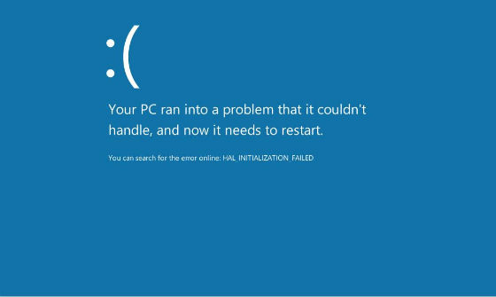
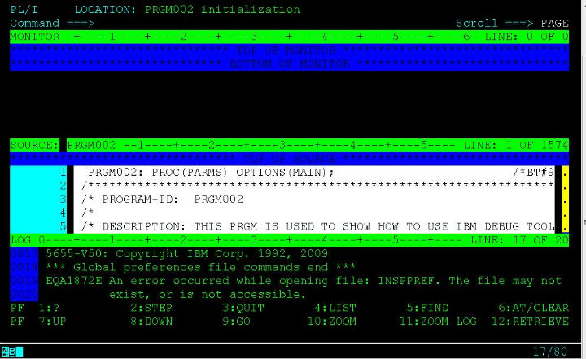
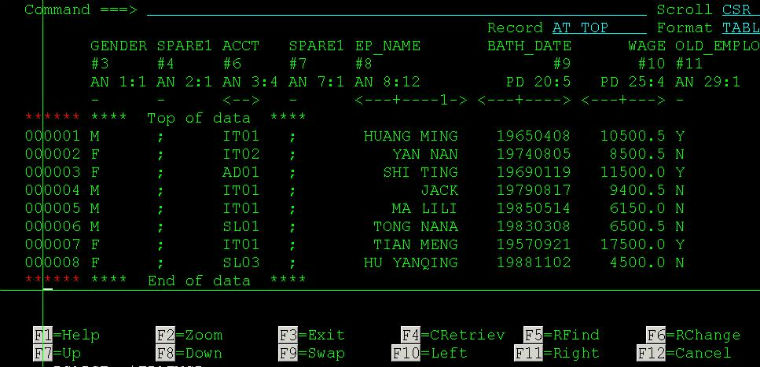
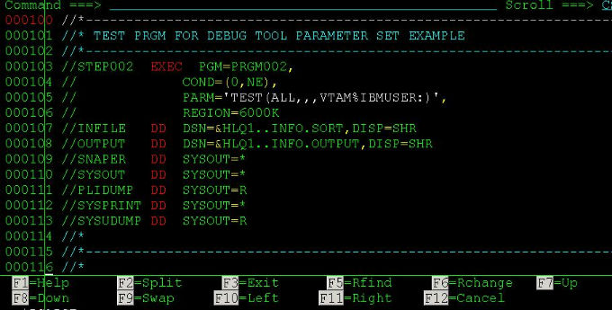

vmware8下给windows8安装vmware tools
昨晚在Vmware8下安装了windows8，今天打开发现没有声音。晕，竟然忘了安装Vmware tool了！这里先说一下安装VMware tool有什么好处：
- 解决windows8在vmware8下没有声音的问题；
- 解决不能在自身系统和虚拟机vmware8之间拷贝，粘贴，移动数据和文件的问题；
- 解决共享文件夹在vmware8的windows8下不能使用的问题；
- 其他好处；
下面简单的说说如何在Vmware8下为window8-dev-preview(开发者预览版)安装vmware tool。
1、 安装完VMware Workstation 8.0.0.471780之后，在安装目录下自带了适合各个系统的vmware tools，这里我们当然选用windows.iso啦！在windows8虚拟机设置的光盘(CD/DVD)设置里面输入windows.iso的路径，比如我的是：D ...
comments
Read More
虚拟机vmware8下安装体验win8开发者预览版
这两天微软发布了windows8的开发者预览版本(dev preview edition)提供下载,首日的下载量就突破50万。虽然这是一个被阉割过的windows8版本，我还是想下载下来安装在虚拟机上试试。
首先应该去微软官方网站下载win8的镜像ISO文件，这里是官方下载地址，我下载的是WindowsDeveloperPreview-32bit-English.iso。
WindowsDeveloperPreview下载地址
原先我的vmware版本是7.1.4，但是在安装win8的时候一开始就碰到了·
"your pc ran into a problem that it couldn't handle,and now it needs to restart"·
正所谓出师不利:

解决办法是到vmware官方网站http://www.vmware.com去下载最新的Vmware Workstation 8 .0 build 471780。也是这两天才最新发布的，估计是为了迎接win8-dev-pre ...
comments
Read More
Backtrack5最新版chrome
在windows下用惯了chrome，受不了chrome的诱惑，还是忍不住想把bt5下的firefox给换了。chrome官网下载安装包放置于/root/software/路径下，然后安装。
root@bt:~# cd software/
root@bt:~/software# dpkg -i google-chrome-stable_current_i386.deb
Selecting previously deselected package google-chrome-stable.
(Reading database ... 220905 files and directories currently installed.)
Unpacking google-chrome-stable (from google-chrome-stable_current_i386.deb) ...
Setting up google-chrome-stable (13.0.782.220-r99552) ...
update-alternatives: using /usr/bin/google ...
comments
Read More
backtrack5下注册nessus非商用版
打开BT5下菜单Backtrack --> Vulnerability Assessment --> Network Assessment --> Vulnerability Scanner --> Nessus start 会提示插件缺失需要注册。
root@bt:~# Missing plugins. Attempting a plugin update...
Your installation is missing plugins. Please register and try again.
To register, please visit http://www.nessus.org/register/
到官网http://www.nessus.org/register注册，好工具只给注册家用版，填好邮箱注册即可，登陆邮箱会收到一封确认邮件。告诉你在不同系统(windows ...
comments
Read More
genlist + nmap
Usage: genlist [Input Type] [General Options]
Input Type:
-s --scan Ping Target Range ex: 10.0.0.\*
Scan Options:
-n --nmap Path to Nmap executable
--inter Perform Nmap Scan using non default interface
General Options:
-v --version Display version
-h --help Display this information
Send Comments to Joshua D. Abraham ...
comments
Read More
IBM Debug Tool使用
关于IBM DebugTool的一些介绍，请参照我的另一篇博文：<>，这里呢，我是想说说一般我们用IBM Debug Tool来调试PL/I或者COBOL程序的时候都有哪些命令或者说按键可以用，比如说设置断点，运行至断点处，监视变量值啊什么的这种一般不管什么程序的调试都会用到的知识。当然，这本身很简单，写在这里只是为了让新人更快的学会使用，基本上10分钟搞定的那种，这样就节省了大家的时间了。
先上个IBM DebugTool的截图：

可以看到，最上面一行显示了当前debug的程序名字PRGM002以及所用的语言PL/I,接着是命令行COMMAND,所有的调试命令都在这一行输入。然后是变量监视区域(MONITOR)，源程序区(SOURCE)以及调试日志(LOG)区域。Debug Tool遵循“七上八下”原则，也就是F7向上翻页，F8向下翻页。
执行下一条语句
按 ...
comments
Read More
BackTrack5 R1发布
偶然间在逛到www.backtrack-linux.org的时候，发现首页赫然写着：“BackTrack 5 R1 Released! Aug 18th, 2011”，bt有新版本发布了我竟然还不知道。哎~。
从http://www.backtrack-linux.org/downloads下载了Backtrack5 R1在虚拟机里面试了下，还没有硬盘安装，感觉和BT5几乎没什么区别。
不过据说修复了120个bug, 添加了30个新工具,并且升级了70个工具;用命令uname -a查看了下发现内核也从原来的2.6.38升级到2.6.39.4。看来没什么特别需要的话暂时还是不升级好了,BT5挺好的。
这里附上BackTrack5R1的BT种子，感兴趣的话请自行移步Backtrack官网下载。
comments
Read More
IBM File Manager for z/os 续(一)
上一次我简单介绍了下大机平台上的一个强大的文件查看/编辑工具，这里我要介绍几个在用FileManager查看/编辑 QSAM顺序文件的时候的小技巧。
 上图显示的是employee的信息文件，比较小，只有几条记录。但是一般在生产环境上，数据都有好几百万条，如果你很傻的直接FIND 关键字来查找，那么抛开CPU耗费不说，你自己也将耗费很长的一段时间来等待搜索结果出来，所以，看看这篇文章，学会几个*File Manager*的使用技巧还是有必要的(如果你没功夫去看IBM红宝书的话)。
1、只查找指定字段(Field)
例：只在ACCT字段查找关键字“IT”
命令： F IT #6 (可以把#6看成ACCT的别名)
例：只在ACCT字段和EP_NAME字段查找关键字"IT"
命令： F IT #6 #8
2、只查找指定几列 (Column)
例：只在第8至20列查找关键字"AN"
命令 ...
comments
Read More
Debug Tool for z/OS
作为一个PL/I、COBOL程序猿，调试程序是必须的一项技能。这里我来说说大机上面的调试工具IBM的DebugTool，它支持的环境包括BATCH, TSO, CICS, DB2, DB2存储过程以及UNIX等等。
这篇我来说说如何设置让程序可以被Debug
首先，你必须在编译程序的时候需要选择以Debug模式编译，这个在changeman里面直接在编译的时候选个IBM Debug Tool="Y"就可以了。
接着，如果是BATCH的，就需要在JCL的PARM中指定TEST运行时的参数，通过VTAM接口来初始化debug模式，VTAM%后面跟着的是userid，就像这样：

是BATCH的话，你还要有一个Debug的session，这个可以参照我的另外一篇博文：<<登陆大型机——Aviva的介绍>>，只需注意在建debug session的时候destination的IP一般和普通大机的物理ip是不一样。填上正确的ip,然后用你的id登陆,这里我的id是IBMUSER，须跟上面设置的一样。
回到JCL这边，submit，那恭喜你，你就可以看到Debugtool的画面了:
但是，如果程序是ONLINE的话，一般我们用CICS上面的DTCN这个工具来debug的。这里我假设你已经在上面“首先”里面正确编译了一个ONLINE的程序PRGM002 (带debug编译选项的)。然后，你登陆CICS ...
comments
Read More
dnsdict6获取ipv6地址
[dnsdict6 v1.4 (c) 2010 by van Hauser / THC www.thc.org]
dnsdict6用来查询网站的ipv6地址，如果存在的话就显示，不存在的话就没有显示。可自定义线程数和字典。用法为：
Syntax: dnsdict6 [-t THREADS] domain [dictionary-file]
root@bt:~# dnsdict6 google.com
Starting enumerating google.com. - creating 8 threads for 3001 words...
Estimated time to completion: 2 to 5 minutes
ipv6.google.com ...
comments
Read More